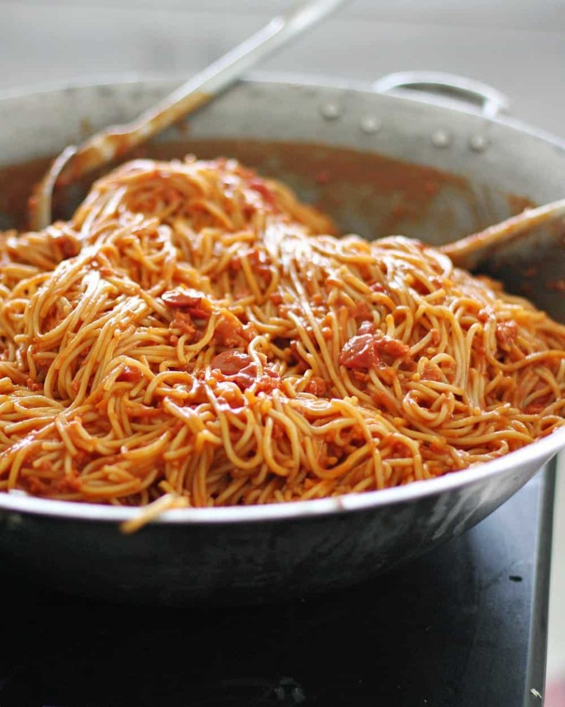

Spaghetti

Ingredients:
Spaghetti pasta:
- 500g spaghetti noodles
- Pinch of salt
2-3 tbsp oil
Spaghetti sauce:
- 250g ground pork or beef, seasoned with salt and pepper
- 1 pack of sweet spaghetti sauce
- 2 red onions, chopped
- 3 pieces of garlic, minced
- 2 tomatos, sliced into chunks
- butter or oil
- 1-2 tbsp brown sugar
Instructions:
Spaghetti pasta:
- Bring a pot of water to boil. Add salt and oil.
- Once water is boiling, add the spaghetti noodles.
- Once noodles are al dente, turn off heat and drain water.
- Pour cold water on cooked noodles to keep them al dente.
- Set noodles aside.
Spaghetti sauce:
- Saute onions and garlic in oil or butter.
- Add tomatos and saute until tomatos are soft.
- Add ground pork/beef and brown sugar.
- Cook until meat turns brown.
- Pour 1 pack of sweet spaghetti sauce.
- Simmer for 3-4 minutes in medium-low heat or until sauce begins to boil.
- Add cooked spaghetti noodles and enjoy.